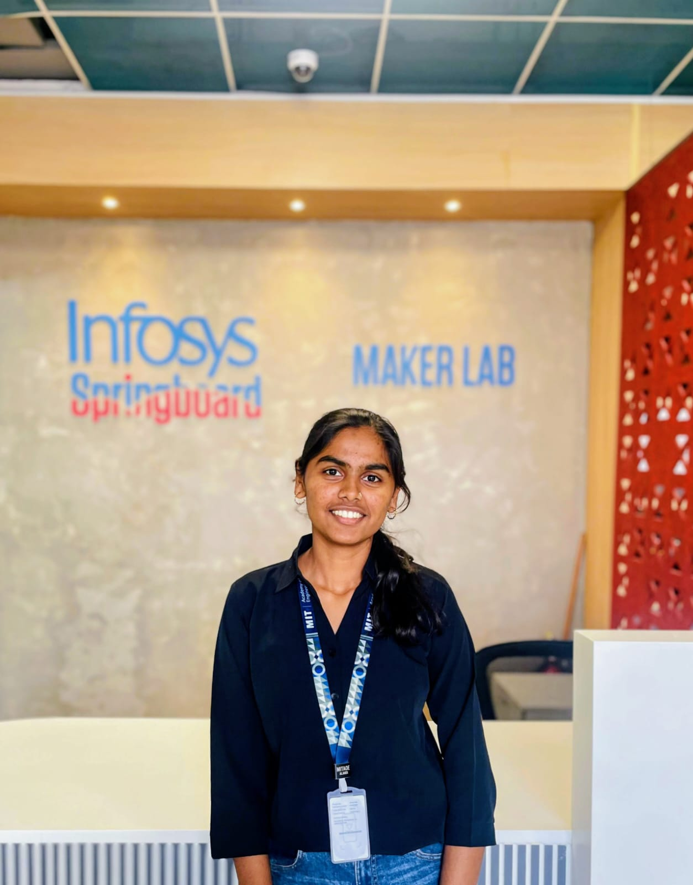

Programming
Python
Java
C
C++
HELLO, I'M SAKSHI WALUNJ
I'm a Computer Science student specializing in Artificial Intelligence and Machine Learning. I enjoy exploring new technologies, solving problems, and turning ideas into practical projects.

01 / ABOUT ME
I'm pursuing B.Tech in Computer Science and Engineering (Artificial Intelligence and Machine Learning) at MIT Academy of Engineering, Pune. I joined through Direct Second Year admission after completing my Diploma in Computer Engineering.
I enjoy understanding how technology works, experimenting with AI applications, and building software that solves practical problems. My interests include machine learning, computer vision, full-stack development, and emerging technologies.
02 / MY TOOLKIT
Technologies and concepts I use while learning and building projects.
03 / SELECTED WORK
A selection of academic and personal projects.
01 / AI & GENERATIVE AI
A multimodal AI project concept for analyzing food labels, extracting nutritional details, and generating evidence-based explanations using retrieval-augmented generation.
View on GitHub ↗02 / JAVA & DATABASES
A Java-based web application focused on managing inventory information and organizing product and stock records.
View on GitHub ↗03 / WEB DEVELOPMENT
A web-based academic scheduling project designed to organize timetable information and simplify schedule management.
View on GitHub ↗04 / EDUCATION
MIT Academy of Engineering, Alandi, Pune
CGPA: 8.52 / 10Jaihind Polytechnic, Kuran · MSBTE
91.77%Smt. Reubai Balaji Deokar Vidyalay, Wadgaon Anand · MSBSHSE
91%05 / CONTINUOUS LEARNING
Courses that helped me explore new technologies.
06 / MILESTONES
Co-authored research on an AI-based Human Intrusion Detection and Alert Generation System published in IJRAR.
Part of the diploma basketball team that finished runner-up in a D1 zonal girls' basketball competition.
Scored 91% in Class 10 and 91.77% in Diploma in Computer Engineering.
Participated in a state-level technical paper presentation competition during diploma.
LET'S CONNECT
I'm interested in learning, collaborating on projects and exploring opportunities in AI, machine learning and software development.
Send me an email ↗